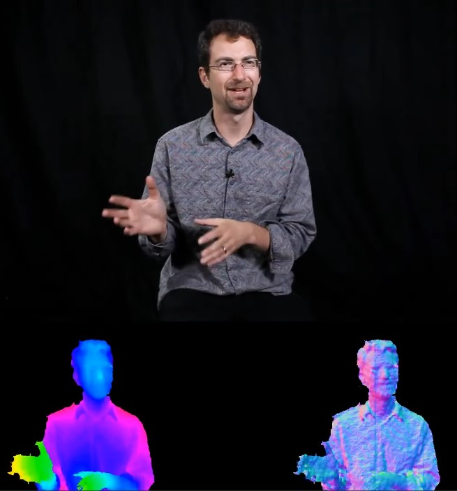

Martin Wattenberg
Cartographier les données
Martin Wattenberg est un chercheur et artiste américain spécialisé dans la visualisation de données. De la Map of the Market à ses projets chez Google et à Harvard, il conçoit des interfaces qui transforment des masses de chiffres en paysages visuels lisibles, interactifs et accessibles.
